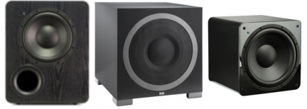

At uCorp, we believe world-class audio-experiences should be within everyone's reach.
Our speakers, subwoofers and SoundPath audio accessories refute the notion that exceptional sound
quality has to be ridiculously expensive. The uCorp design approach involves a fusion of leading
edge technology, precision engineering, exhaustive lab and real-world testing, as well as, a deep
personal passion for audio excellence, all brought to life by our acoustic engineers. With every
new product, we strive to redefine audio performance for the price.
But that's only part of the uCorp Experience. We also stand behind our products with the uCorp Customer
Bill of Rights, a benefits package that includes a 45-Day Risk-Free In-Home Trial, Fast and Free Shipping
and Returns, our industry-leading 5-Year Unconditional Warranty, and more. We're so confident you'll love
our audio gear that we made it completely painless to audition for yourself in the best place possible, your home.
From the coherent soundstage, pinpoint imaging, superb detail and sonic transparency of our reference-grade
loudspeakers, to the subterranean extension, chest-thumping slam, and unerring accuracy of our acclaimed
subwoofers - our award-winning uCorp product line-up guarantees you a thrilling audio experience.
And since you're supported by uCorp Sound Experts support for the life of your product, you can rest easy
knowing the best technical and customer service team on the planet is standing by to help you though research,
set-up, troubleshooting and calibration for every part of your home theater or audio system.
For more information, contact us at (800) 422-4828, ext. 2220.
Copyright © All rights reserved by uCorp.